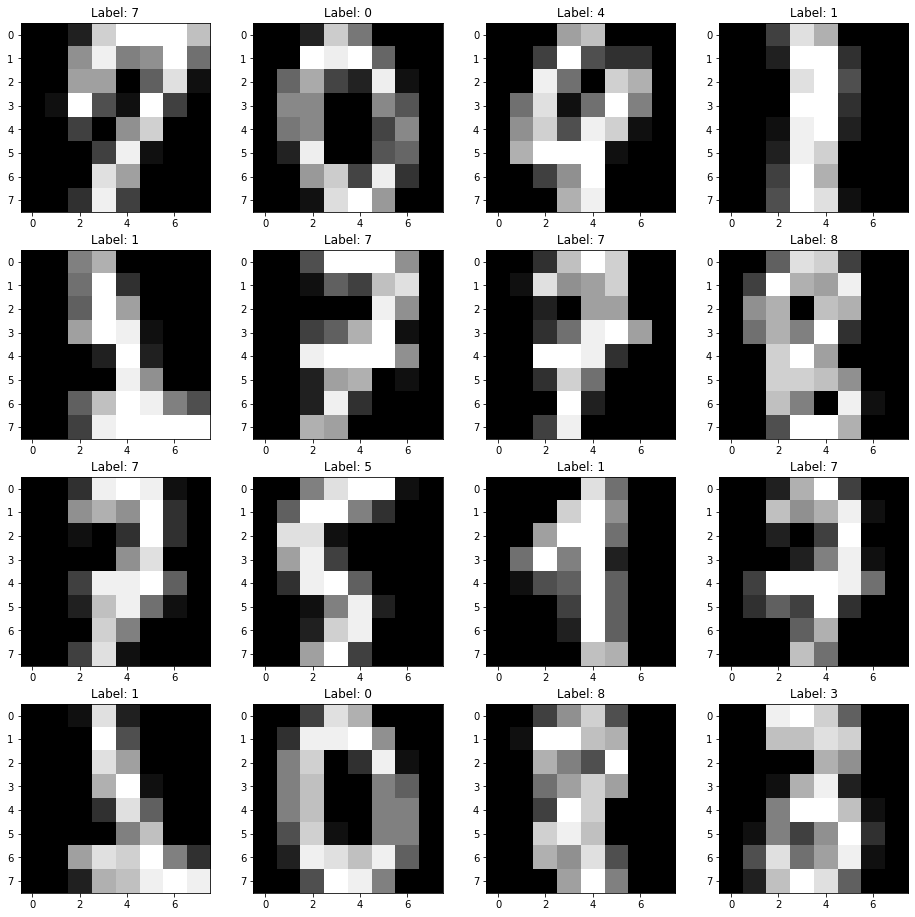
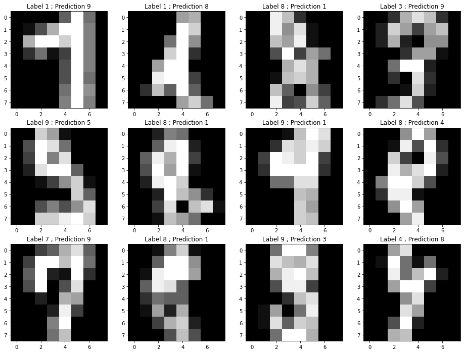

import numpy as np
import matplotlib.pyplot as pltSoftmax classification
In this exercise, you will implement a softmax classifier for multi-class classification.
Loading the data
Let’s now import the digits dataset provided by scikit-learn:
https://scikit-learn.org/stable/modules/generated/sklearn.datasets.load_digits.html
It contains 1797 small (8x8) black and white images of digits between 0 and 9.
The two following cells load the data and visualize 16 images chosen randomly.
from sklearn.datasets import load_digits
digits = load_digits()
N, w, h = digits.images.shape
d = w * h # number of pixels
c = len(digits.target_names) # number of classesrng = np.random.default_rng()
indices = rng.choice(N, 16)
plt.figure(figsize=(16, 16))
for i in range(16):
plt.subplot(4, 4, i+1)
plt.imshow(digits.images[indices[i], :], cmap="gray")
plt.title("Label: "+ str(digits.target[indices[i]]))
plt.show()
Digits are indeed to be recognized, the hope being that they are linearly separable and we can apply a softmax classifier directly on the pixels.
The only problem is that each image is a 8x8 matrix, while we want vectors for our model. Fortunately, that is very easy with reshape:
X = digits.images.reshape((N, d))
print(X.shape)(1797, 64)Let’s know have a look at the targets, i.e. the ground truth / labels of each digit:
labels = digits.target
print(labels)
print(labels.shape)[0 1 2 ... 8 9 8]
(1797,)Each label is an integer between 0 and 9, while our softmax classifier expects a one-hot-encoded vector of 10 classes, with only one non-zero element, for example for digit 3:
\[[0, 0, 0, 1, 0, 0, 0, 0, 0, 0]\]
To do the conversion, we can once again use a built-in method of scikit-learn:
from sklearn.preprocessing import OneHotEncoder
t = OneHotEncoder().fit_transform(labels.reshape(-1, 1)).toarray()
print(t)
print(t.shape)[[1. 0. 0. ... 0. 0. 0.]
[0. 1. 0. ... 0. 0. 0.]
[0. 0. 1. ... 0. 0. 0.]
...
[0. 0. 0. ... 0. 1. 0.]
[0. 0. 0. ... 0. 0. 1.]
[0. 0. 0. ... 0. 1. 0.]]
(1797, 10)Q: Split the data into a training set X_train, t_train and a test set X_test, t_test using scikit-learn (e.g. with a ratio 70/30).
from sklearn.model_selection import train_test_split
X_train, X_test, t_train, t_test = train_test_split(X, t, test_size=0.3)
N_train = X_train.shape[0]
N_test = X_test.shape[0]
print(N_train, "training samples,", N_test, "test samples.")1257 training samples, 540 test samples.Softmax linear classifier
Let’s remember the structure of the softmax linear classifier: the input vector \(\mathbf{x}\) is transformed into a logit score vector \(\mathbf{z}\) using a weight matrix \(W\) and a bias vector \(\mathbf{b}\):
\[ \mathbf{z} = W \times \mathbf{x} + \mathbf{b} \]
This logit score has one element per class, so the weight matrix must have a size \((c, d)\), where \(c\) is the number of classes (10) and \(d\) is the number of dimensions of the input space (64). The bias vector has 10 elements (one per class).
The logit score is turned into probabilities using the softmax operator:
\[ y_j = P(\text{class = j}) = \frac{\exp(z_j)}{\sum_k \exp(z_k)} \]
The following Python function allows to turn any vector \(\mathbf{z}\) (numpy array) into softmax probabilities:
def softmax(z):
e = np.exp(z - z.max())
return e/np.sum(e)Q: Experiment with the softmax() to understand its function. Pass it different numpy arrays (e.g. [-1, 0, 2]) and print or plot the corresponding probabilities.
z = np.array([-1, 0, 2])
s = softmax(z)
print(s)[0.04201007 0.1141952 0.84379473]The loss function to use is the cross-entropy or negative log-likelihood, defined for a single example as:
\[ \mathcal{l}(W, \mathbf{b}) = - \mathbf{t} \cdot \log \mathbf{y} = - \log y_j \]
where \(\mathbf{t}\) is a one-hot encoding of the class of the example and \(j\) is the index of the corresponding class.
After doing the derivations, we obtain the following learning rules for \(W\) and \(\mathbf{b}\) to minimize the loss function:
\[ \Delta W = \eta \, (\mathbf{t} - \mathbf{y}) \, \mathbf{x}^T \]
\[ \Delta \mathbf{b} = \eta \, (\mathbf{t} - \mathbf{y}) \]
Note that because \(W\) is a \((c, d)\) matrix, \(\Delta W\) too. \((\mathbf{t} - \mathbf{y}) \, \mathbf{x}^T\) is therefore the outer product between the error vector \(\mathbf{t} - \mathbf{y}\) (\(c\) elements) and the input vector \(\mathbf{x}\) (\(d\) elements).
Implementation
You will now modify your implementation of the online Perceptron algorithm from last week.
Some things to keep in mind:
Wmust now be defined as a \((c, d)\) matrix (numpy array) andbas a vector with \(c\) elements. Both can be initialized to 0.When computing the logit score \(\mathbf{z} = W \times \mathbf{x} + \mathbf{b}\), remember that
Wis now a matrix, so its position will matter in the dot productnp.dot.Use the
softmax()function defined above on the whole vector instead ofnp.sign()orlogisticto get the prediction \(\mathbf{y}\).For \(\Delta W\), you will need the outer product between the vectors \(\mathbf{t} - \mathbf{y}_\text{train}\) and \(\mathbf{x}_\text{train}\). Check the doc for
np.outer().The one-hot encoding of the class of the example \(i\) is now a vector with 10 elements
t_train[i, :]. You can get the index of the corresponding class by looking at the position of its maximum witht_train[i, :].argmax().Similarly, the predicted class by the model can be identified by the class with the maximum probability:
y.argmax().Do not forget to record and plot the evolution of the training error and loss. Compute the test error and loss at the end of each epoch, and plot them together with the training error/loss.
Pick the right learning rate and number of epochs.
Q: Let’s go.
# Parameters
eta = 0.001
nb_epochs = 100
# Initialize the weight matrix and bias vector
W = np.zeros((c, d))
b = np.zeros(c)
# Perceptron algorithm
training_errors = []
training_losses = []
test_errors = []
test_losses = []
for epoch in range(nb_epochs):
error = 0
loss = 0.
# Iterate over all training examples
for i in range(N_train):
# Prediction
z = np.dot(W, X_train[i, :]) + b
# Probability
y = softmax(z)
# Update the weight
W += eta * np.outer((t_train[i, :] - y), X_train[i, :])
# Update the bias
b += eta * (t_train[i, :] - y)
# Increment the error if the maximum probability is different from the class
if y.argmax() != t_train[i, :].argmax():
error += 1
# Accumulate the loss
loss -= np.log(y[t_train[i, :].argmax()])
training_errors.append(error/N_train)
training_losses.append(loss/N_train)
# Test error
error = 0
loss = 0.
# Iterate over all test examples
for i in range(N_test):
# Prediction
z = np.dot(W, X_test[i, :]) + b
# Probability
y = softmax(z)
# Increment the error if the maximum probability is different from the class
if y.argmax() != t_test[i, :].argmax():
error += 1
# Accumulate the loss
loss -= np.log(y[t_test[i, :].argmax()])
test_errors.append(error/N_test)
test_losses.append(loss/N_test)
print("Final training error:", training_errors[-1])
print("Final training loss:", training_losses[-1])
print("Final test error:", test_errors[-1])
print("Final test loss:", test_errors[-1])
plt.figure(figsize=(15, 6))
plt.subplot(121)
plt.plot(training_errors, label="training")
plt.plot(test_errors, label="validation")
plt.legend()
plt.title("Error")
plt.subplot(122)
plt.plot(training_losses, label="training")
plt.plot(test_losses, label="validation")
plt.legend()
plt.title("Cross-entropy loss")
plt.show()Final training error: 0.0
Final training loss: 0.005654702534318429
Final test error: 0.02962962962962963
Final test loss: 0.02962962962962963
Q: What is the final training error and loss of the model? After how many epochs do you get a perfect classification? Why do they evolve like this?
Hint: you may need to avoid plotting the error/loss during the first 20 epochs or so to observe the effect.
A: The training error reaches quickly 0, but the loss still decreases for a number of epochs. This is because the probability vector y is a correct prediction for the class (the maximum probability corresponds to the correct class) but not with a probability of 1 yet. The loss continues to evolve even when there is no error, as it wants to bring the probability vector as close as possible to a binary vector.
This is the main difference with the mean square error (mse) loss function: as soon as there are no errors, the mse loss becomes 0 and learning stops. In classification problems, one should therefore track the loss function, not the training error.
Q: Compare the evolution of the training and test errors during training. What happens?
The test error is higher than the final training error. as the examples were not use for training. This is a classical sign of overfitting, although the model is linear. Regularization may help.
If you let the network learn for more epochs, the validation error may even start to go up: you need early stopping.
Q: The following cell samples 12 misclassified images from the test and shows the predicted class together with the ground truth. What do you think?
misclassified = []
for i in range(N_test):
c = softmax(np.dot(W, X_test[i, :]) + b).argmax()
if c != t_test[i, :].argmax():
misclassified.append([X_test[i, :].reshape((8, 8)), t_test[i, :].argmax(), c])
if len(misclassified) > 12: break
plt.figure(figsize=(16, 12))
for i in range(12):
if i < len(misclassified):
X, t, c = misclassified[i]
plt.subplot(3, 4, i+1)
plt.imshow(X, cmap="gray")
plt.title("Label " + str(t) + " ; Prediction " + str(c))
plt.show()
A: for some misclassified images, the mistakes are quite understandable, so the classifier did a quite good job. Real-world data are never clean, there always are some bad annotations. It is therefore important to use methods that are robust to outliers, such as soft classifiers.